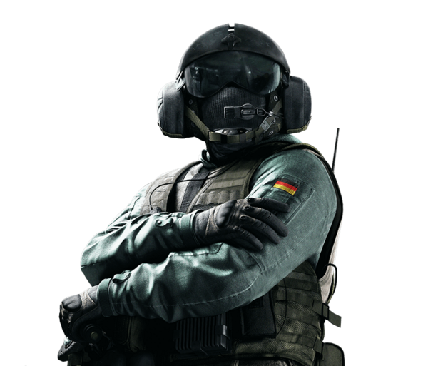
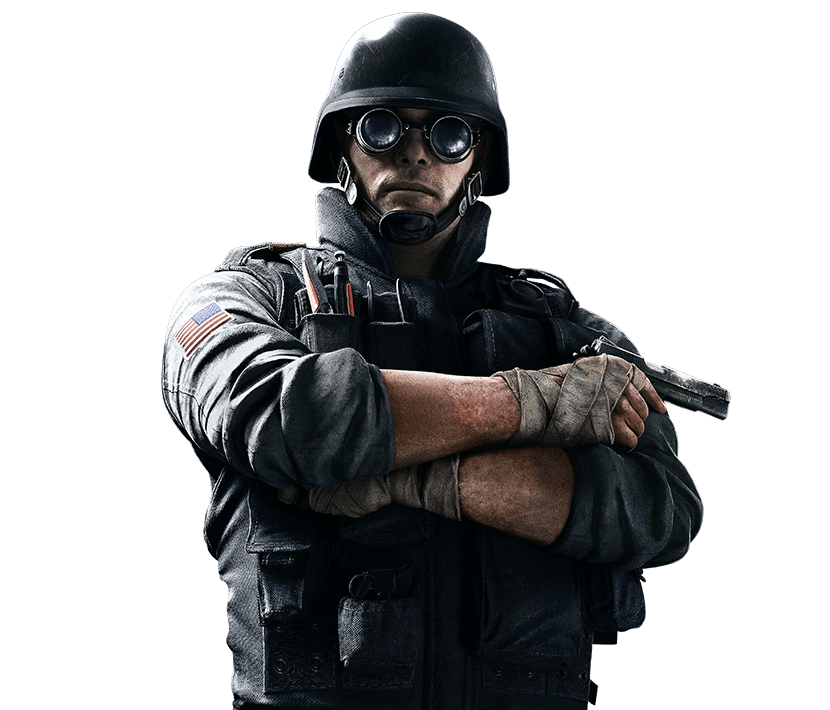

ASH
Ash é uma operadora de ataque conhecida por sua velocidade e a capacidade de destruir superfícies com seu projétil explosivo.
Função: Ataque
Em Rainbow Six Siege, cada operador tem sua habilidades, armas e equipamentos. Escolher o operador certo pode fazer muita diferença durante a partida.
Ash é uma operadora de ataque conhecida por sua velocidade e a capacidade de destruir superfícies com seu projétil explosivo.
Função: Ataque

Jäger é um operador de defesa especializado em proteger a equipe contra granadas e outros projéteis.
Função: Defesa

Thermite é um dos principais operadores para abrir paredes reforçadas e criar novos caminhos para sua equipe.
Função: Ataque
Smoke utiliza granadas de gás para controlar áreas e impedir que os adversários avancem durante a rodada.
Função: Defesa